Every PDF the app makes — payslip, ID card, worker report — checked page by page, in English and Hindi, and corrected
| How it is made | Result | |
|---|---|---|
| Payslip — Save PDF / Share | A picture of the payslip, cut into A4 pages at safe places | 3 pages, ~480 KB, ₹ and Hindi always right |
| Payslip — Print / Save as PDF | The page's own print layout | 2 pages, ~230 KB, real searchable text |
| ID card — PDF / PNG / Share | A picture of the card on A4 | 1 page, ~200 KB |
| Worker report — Print / Save as PDF | The page's own print layout | 2 pages, real searchable text |
| # | Problem | Correction |
|---|---|---|
| 1 | Print did nothing inside the Android app. The worker report could not be printed or saved on the phone at all. | Print now opens Android's own print screen, which also has Save as PDF (real text). Needs a phone test. |
| 2 | Every line of text in the picture PDFs was drawn a few pixels low: ID card text under its own labels, the payslip's colour key cut in half at a page break. | Fixed at the cause (html2canvas's text measurement); text now sits where it does on screen. |
| 3 | Payslip said "Not Saved" — app jargon — on a document a worker keeps. | DRAFT badge, a notice ("figures may still change") and a faint watermark until payroll is generated. |
| 4 | Payslip printed the salary explanation twice. | Printed once. |
| 5 | ID card: company name ran under the corner badge; footer lines ran together. | Laid out clear of each other. |
| 6 | Hindi dates used cut-off months: "07 अग 2026", "10 नव 2026". | Full months everywhere: "07 अगस्त 2026". |
| 7 | Two workers with the same name overwrote each other's files. | Worker ID in every file name: Payslip_USC001_Javed_Nov-2026.pdf, ID_Card_USC001_Javed.pdf. |
| 8 | PDFs had no title. | Title and author set (shown in file managers and PDF viewers). |
| 9 | ID card Share did not work inside the app. | Same Share route as the payslip. |
Kept on purpose: the picture payslip stays at 3 pages so its smallest text is 9 pt, the legibility floor (2 pages would mean 6.7 pt). For a compact, searchable payslip use Print → Save as PDF (page 6).
Before: labels drawn under their pills, the name under the badge, the footer run together. After: all in place, in both languages.
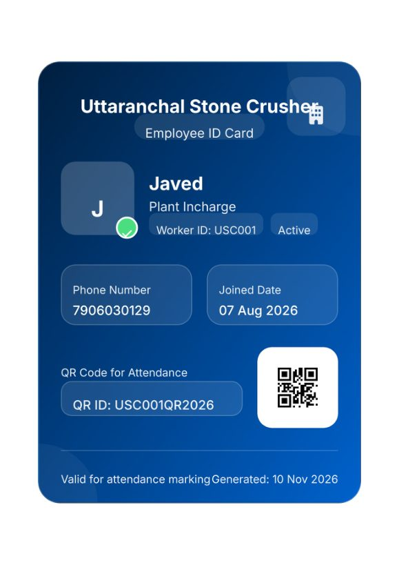
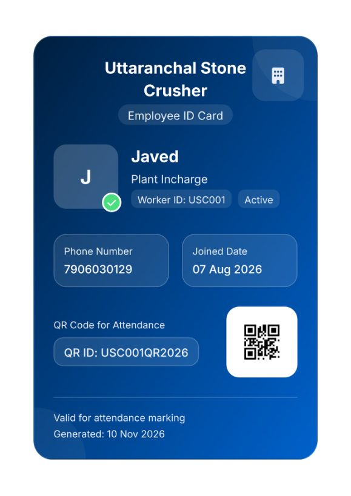
Hindi months in full: "07 अगस्त 2026", "10 नवंबर 2026".
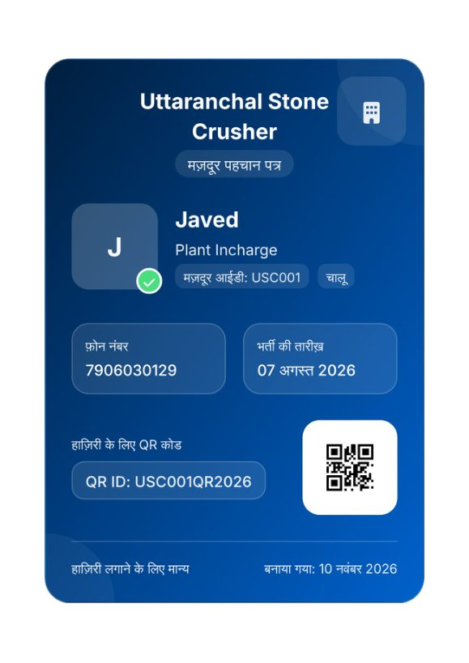
Before: "Not Saved" on the slip, and the colour key under the calendar cut by the page edge. After: a clear Draft notice and badge; the key whole.
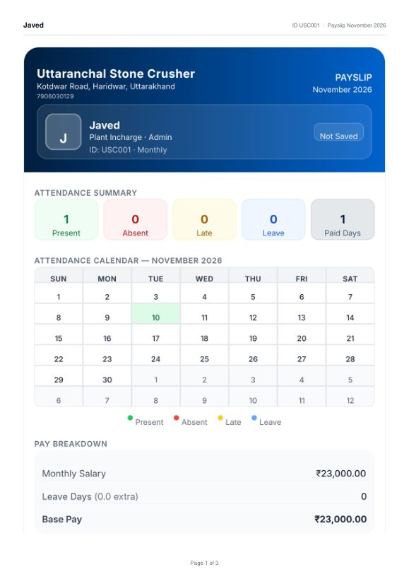
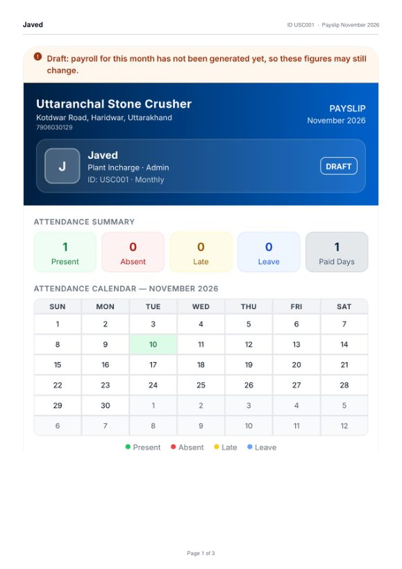
After: a faint DRAFT watermark behind the figures until payroll is generated, and the explanation printed once (before, it appeared again under the net pay).
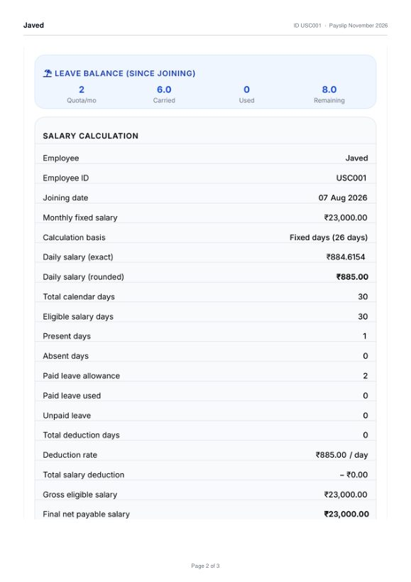
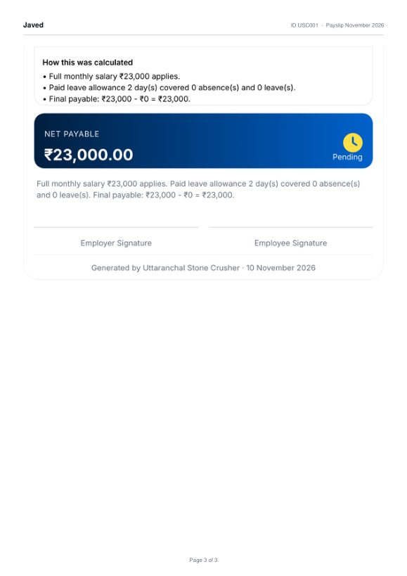
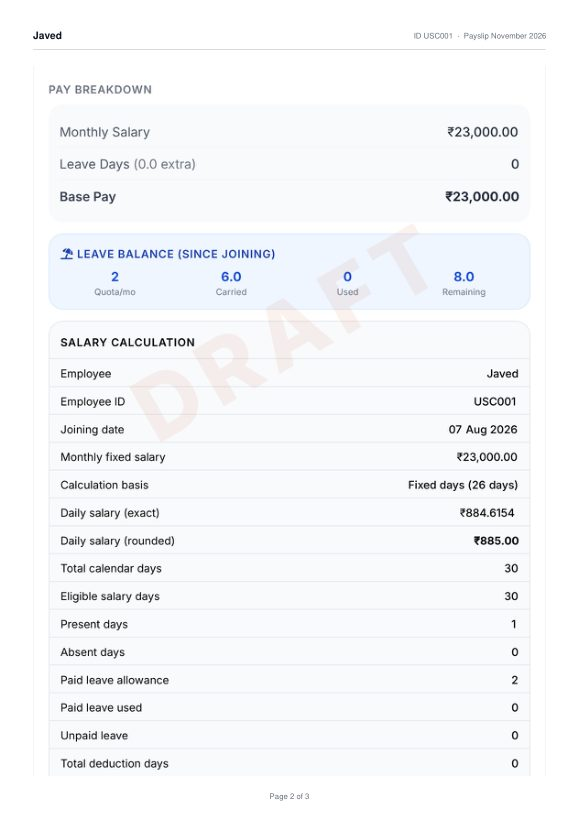
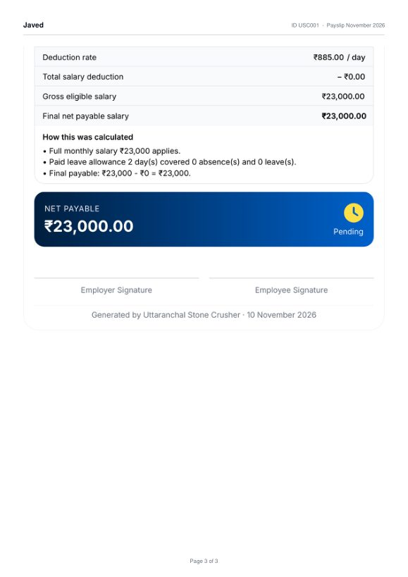
The compact, searchable versions. In a browser, Print offers Save as PDF; inside the Android app it now does too. The worker report was already correct and is unchanged.
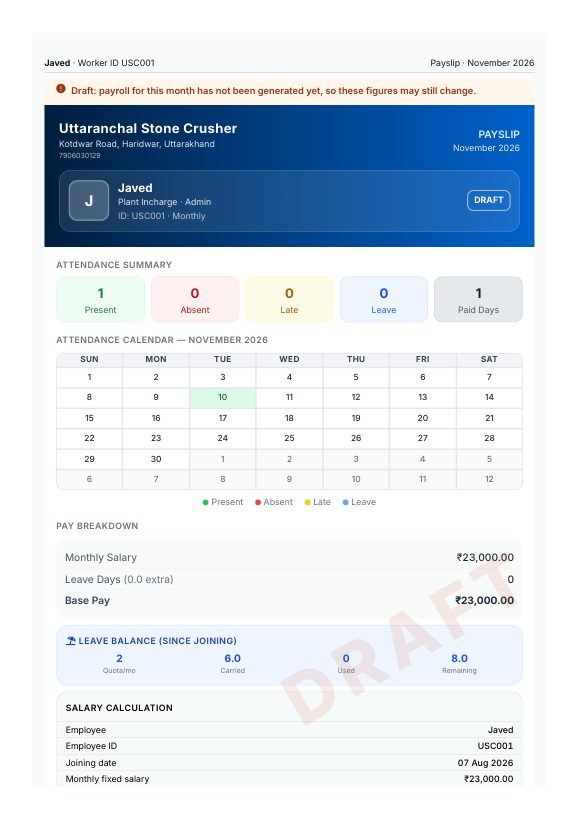
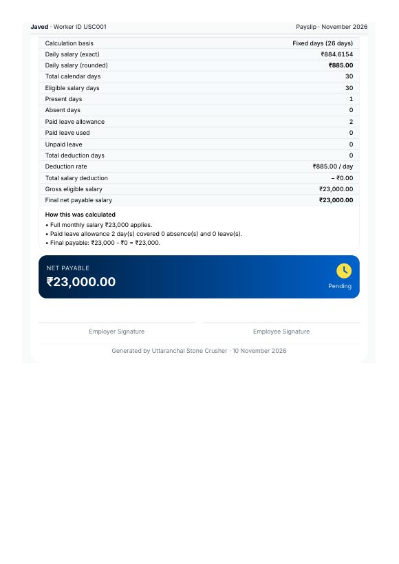
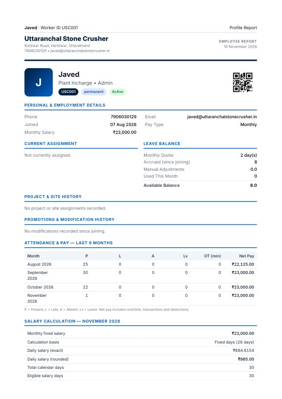
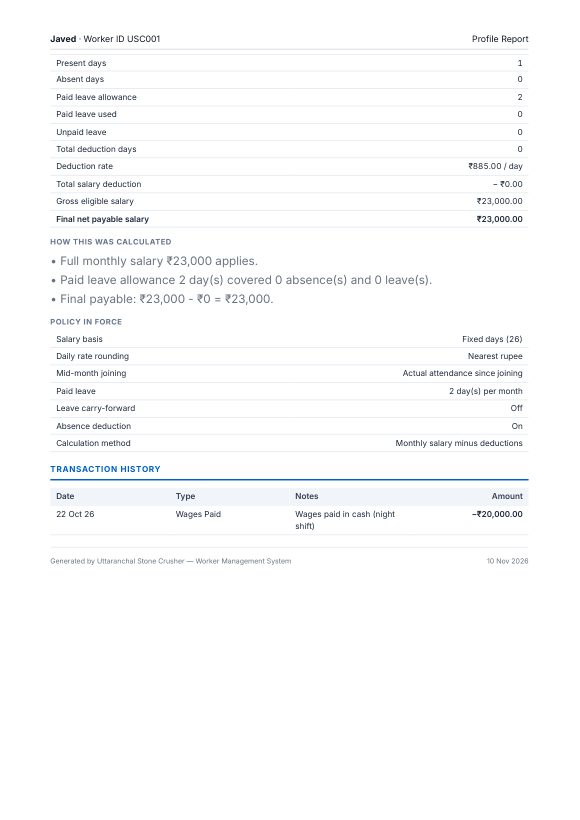